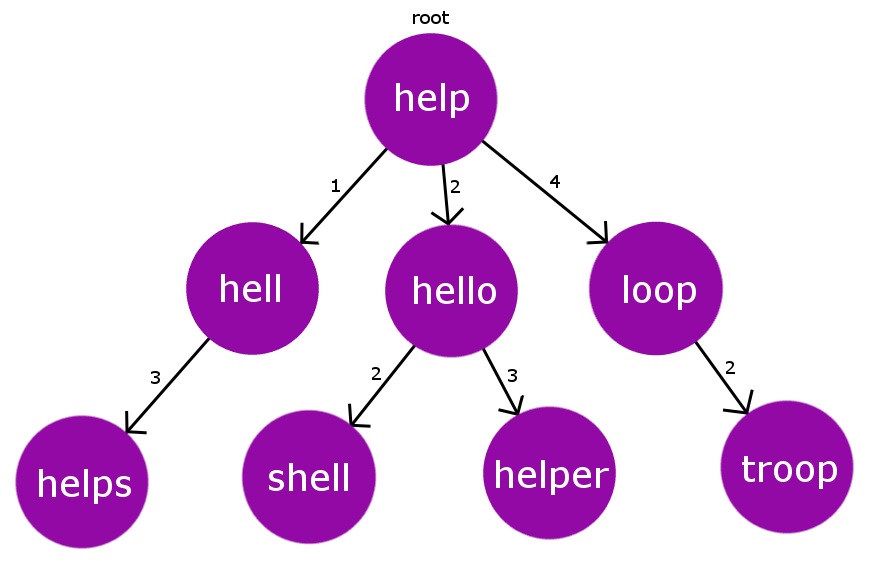

Autocorrect the Search Query
1. BK-Tree (Burkhard-Keller Tree)
A BK-Tree is a specialized data structure designed to quickly find words
that are close to a given query based on edit distance. It is useful for
autocorrect because it efficiently retrieves candidate words that differ
by only a few characters from the misspelled input. This helps
e-commerce search engines suggest correct product names even when users
make typing errors.

Code:
#include "bits/stdc++.h"
using namespace std;
#define MAXN 100
#define TOL 2
#define LEN 10
struct Node {
string word;
int next[2*LEN];
Node(string x):word(x) {
for(int i=0; i<2*LEN; i++) next[i] = 0;
}
Node() {}
};
Node RT;
Node tree[MAXN];
int ptr;
int min(int a, int b, int c) {
return min(a, min(b, c));
}
int editDistance(string& a,string& b) {
int m = a.length(), n = b.length();
int dp[m+1][n+1];
for (int i=0; i<=m; i++) dp[i][0] = i;
for (int j=0; j<=n; j++) dp[0][j] = j;
for (int i=1; i<=m; i++) {
for (int j=1; j<=n; j++) {
if (a[i-1] != b[j-1])
dp[i][j] = min(1+dp[i-1][j], 1+dp[i][j-1], 1+dp[i-1][j-1]);
else
dp[i][j] = dp[i-1][j-1];
}
}
return dp[m][n];
}
void add(Node& root,Node& curr) {
if (root.word == "" ) {
root = curr;
return;
}
int dist = editDistance(curr.word,root.word);
if (tree[root.next[dist]].word == "") {
ptr++;
tree[ptr] = curr;
root.next[dist] = ptr;
} else {
add(tree[root.next[dist]],curr);
}
}
vector<string> getSimilarWords(Node& root,string& s) {
vector<string> ret;
if (root.word == "") return ret;
int dist = editDistance(root.word,s);
if (dist <= TOL) ret.push_back(root.word);
int start = dist - TOL;
if (start < 0) start = 1;
while (start <= dist + TOL) {
vector<string> tmp = getSimilarWords(tree[root.next[start]],s);
for (auto i : tmp) ret.push_back(i);
start++;
}
return ret;
}
int main() {
string dictionary[] = {"hell","help","shell","smell","fell","felt","oops","pop","oouch","halt"};
ptr = 0;
int sz = sizeof(dictionary)/sizeof(string);
for(int i=0; i<sz; i++) {
Node tmp = Node(dictionary[i]);
add(RT,tmp);
}
string w1 = "ops";
string w2 = "helt";
vector<string> match = getSimilarWords(RT,w1);
cout << "similar words in dictionary for : " << w1 << ":\n";
for (auto x : match) cout << x << endl;
match = getSimilarWords(RT,w2);
cout << "Correct words in dictionary for " << w2 << ":\n";
for (auto x : match) cout << x << endl;
return 0;
}
Time Complexity
| Operation |
Worst-Case |
Average-Case |
| Insertion |
O(N² * m * n) |
O(N log N * m * n) |
| Querying |
O(N * m * n) |
O(log N * m * n) |
| Edit distance |
O(m * n) |
- |
Space Complexity
| Space |
O(N * (word size + 2 * LEN)) |